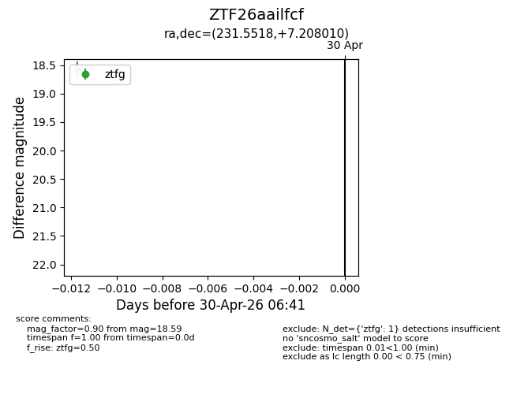
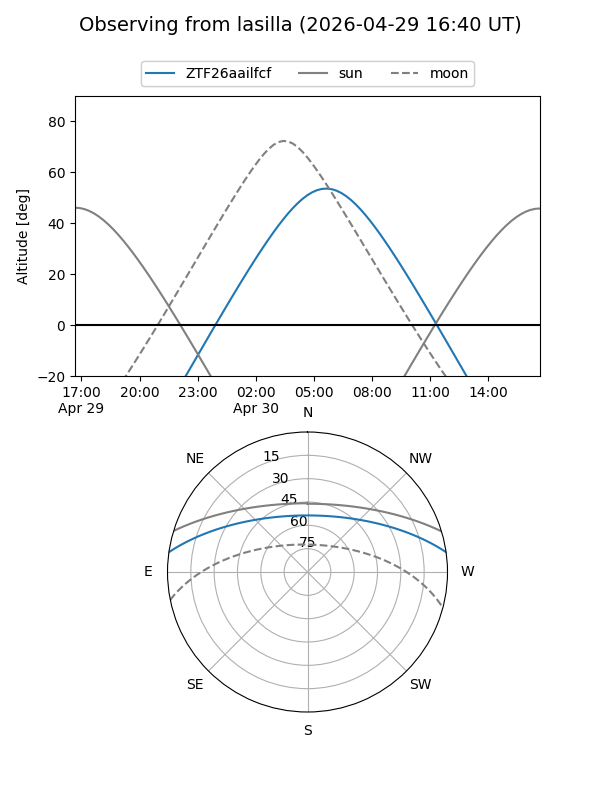
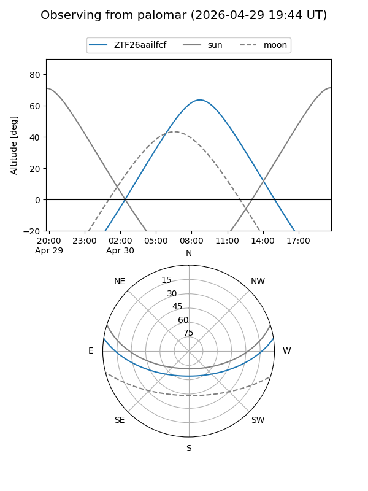

ZTF26aailfcf
Target ZTF26aailfcf at 2026-04-30 06:46
Aliases and brokers:
FINK: link
Lasair: link
ALeRCE: link
alt names
ZTF26aailfcf (ztf,fink_ztf)
Coordinates:
equatorial (ra, dec) = 231.5518,+7.20801
equatorial (HMS+DMS) = 15:26:12.42,+07:12:28.83
galactic (l, b) = (11.6627,+48.27710)
Flags:
Photometry:
last ztfg=18.59
1 ztfg detections
Lightcurve

Visibility


Additional plots